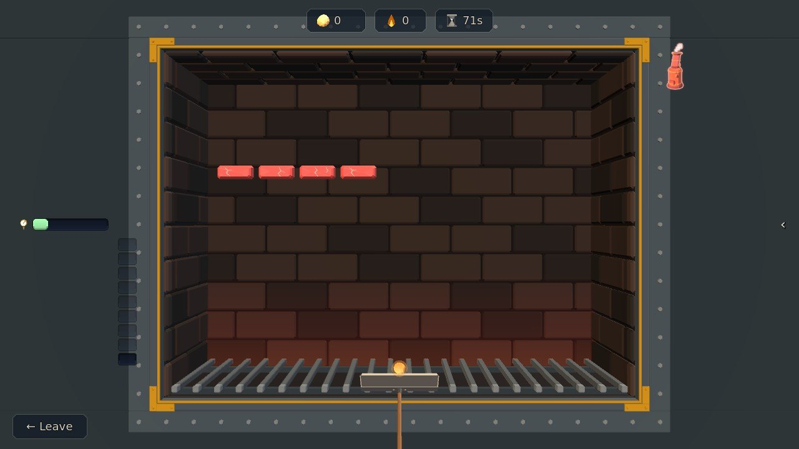
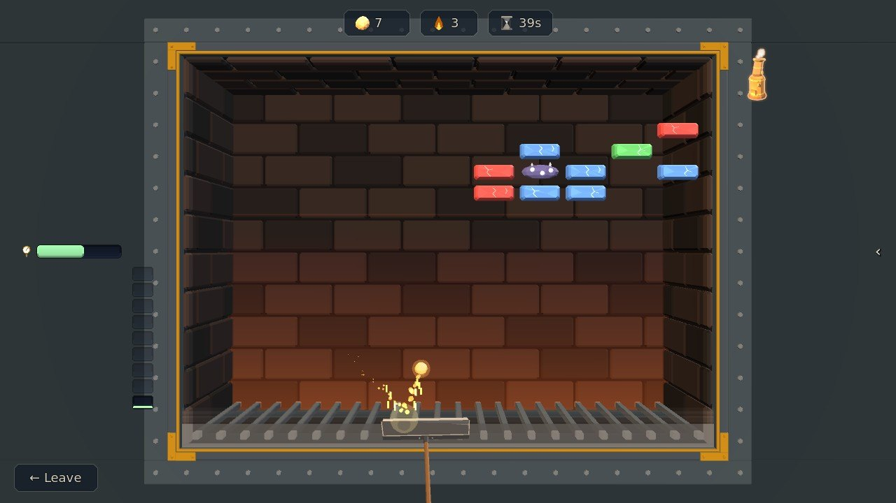
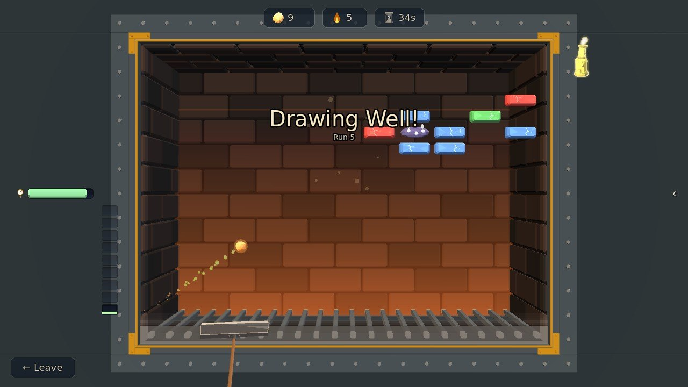
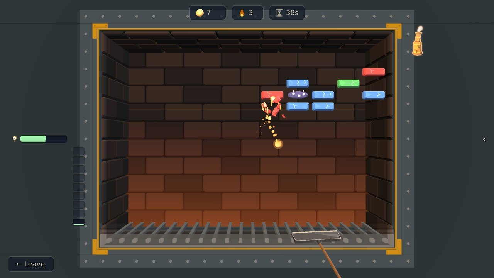
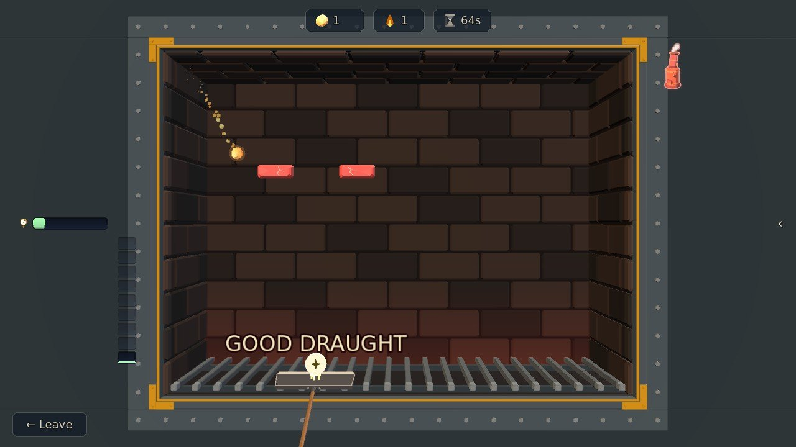
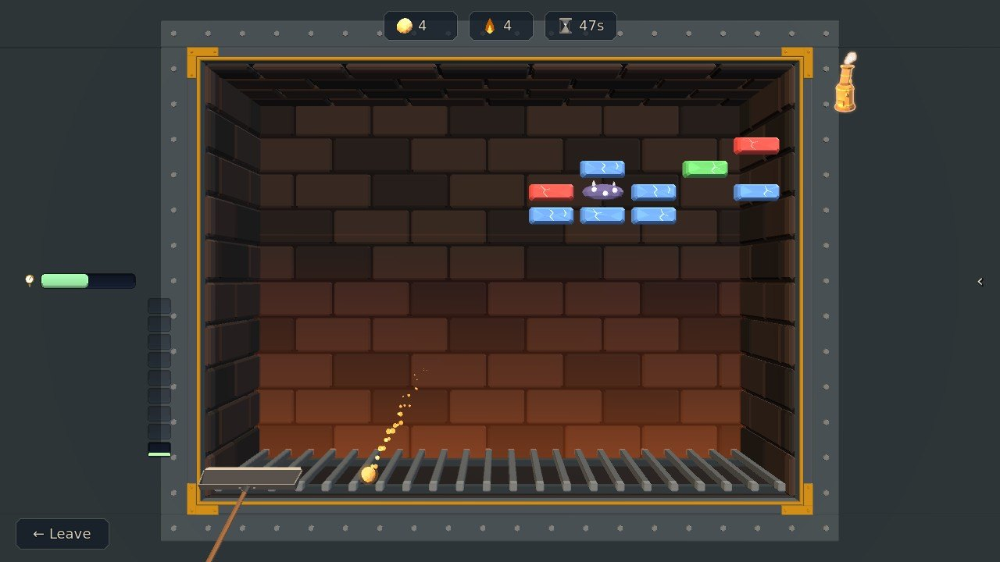
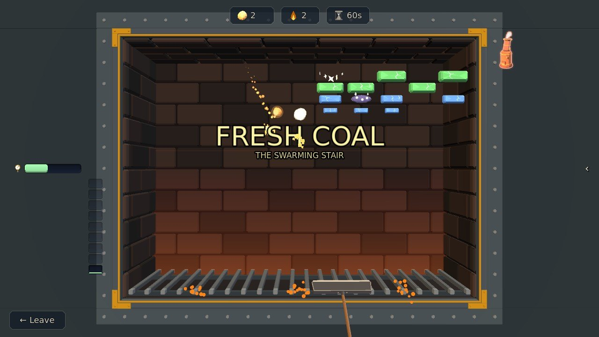

Stoking
Bat an ember of Stardust off your coal shovel into the coal face of the ship's firebox, and keep her boiler drawing.
Step by step
-

1Your shovel2The coal1Your shovel2The coal Step 1Point the shovel
The ball of Stardust is an ember, and the bar at the foot of the firebox is your shovel. Point it with A and D, or drag it. Catch embers and she draws; every one you miss is a push she never gets.
-

1Centre: steep and slow1Centre: steep and slow Step 2The centre sends it steep
Where the ember strikes the shovel sets where it goes. Catch it on the centre and it goes back up steep and slow.
-

1Edge: flat and fast2Five caught in a row1Edge: flat and fast2Five caught in a row Step 3The edge sends it flat and fast
Catch it out toward the edge and it goes back flat and fast. That angle on the coal is the whole craft. Embers caught back to back are a run, and a run is called out over the coal: Drawing Well! at five, then Roaring!, Full Steam! and White Hot!
-

1Red: one hit2Green: three hits1Red: one hit2Green: three hits Step 4Colour is toughness
Red breaks in one hit, then blue, green, yellow, pink, black, striped and rainbow, and the brown shell is the hardest thing in the firebox. Every hit knocks a block down one colour, so you can always see how much is left in it. Punch a lane clean through the face and the ember gets a straight run behind it.
-

1A drop, caught1A drop, caught Step 5Catch what falls
Broken coal drops things. Get the shovel under the good ones: Good Draught is pressure for free, Sparks Fly! splits the ember in three, and Fire Grate saves one ember at the foot. Dodge the bad ones: Blowback, Small Shovel, Cross-Draught and Thick Smoke.
-

1Got past2Pressure1Got past2Pressure Step 6Don't let it past
Miss one and the ash banks up from the grate: your pressure (the gauge on the left) falls, the run you were on ends, and the shovel itself goes sluggish.
-

1Your level2A new face1Your level2A new face Step 7Fresh coal rolls in
The coal never runs out: clear a face and the next one rolls in, in a new shape. The notches left of the board are your level. Stoke well and new coal opens up; lose embers and it falls back.
The rules, as the game tells them
- The ball of Stardust is an EMBER. Your shovel is the bar at the foot — A / D or drag to point it
- Catch embers and she draws; every one you miss is a push she never gets
- ★ WHERE the ember strikes the shovel sets where it goes — centre sends it back steep and slow, the outer edge sends it flat and FAST. That is your angle on the coal, and it is the whole craft
- Punch a lane clean through the coal face and the ember gets a straight run behind it
- Miss and the ASH banks up from the grate: your pressure falls and the shovel itself goes sluggish
- The coal never runs out — clear a face and the next one rolls in, in a new shape
- The notches left of the board are your LEVEL. Stoke well and new coal opens; lose embers and it falls back
THE COAL
- Colour is TOUGHNESS: red is one hit, then blue, green, yellow, pink, black, striped, rainbow, and the brown shell is the hardest thing in the firebox. Every hit knocks a block down one colour, so you can always see how much is left in it
- FIREDAMP goes up and takes everything next to it — aim for the middle of a seam, not the edge
- SPARK SWARMS drift along their row and will not hold still
- FIREBRICKS never break. Learn to bank the ember off them
- BLAST PIPES never break either, but they pay you and throw the ember out faster
- SMOKE gathers BACK if you leave it. Clear it last
- Some coal lies buried in the ash until something touches it
BROKEN COAL DROPS THINGS — CATCH THESE
- SPARKS FLY! — The ember splits in three.
- BROAD SHOVEL — A broader shovel.
- DAMPED DOWN — The ember eases off.
- FIRE TONGS — The ember sticks. Space to let it go.
- POKERS — Space throws a poker from the shovel.
- BLAZE — The ember burns straight through.
- FIRE GRATE — One ember saved at the foot.
- RAKE THE ASH — Clears a layer of ash.
- GOOD DRAUGHT — Pressure, free.
⚠️ AND DODGE THESE
- BLOWBACK — The ember runs away with you.
- SMALL SHOVEL — Your shovel is cut down.
- CROSS-DRAUGHT — Left is right.
- THICK SMOKE — You stoke on memory.
Word for word from the game: in play the same text sits behind the ? on the board, so this page cannot drift from it.